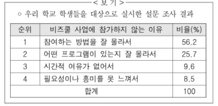

지문 보기(문제8~문제10)

9. <보기>의 설문 조사 결과를 활용하여 (나)를 보완하고자 한다. 자료 활용 방안으로 가장 적절한 것은?
1. 학교에서 창업 관련 프로그램을 운영하기가 현실적으로 어려움을 호소하는 데 활용한다.
2. 비즈쿨 캠프에 참여하는 절차가 복잡하여 학생들의 관심도가 낮음을 지적하는 데 활용한다.
3. 정부 지원의 창업 관련 사업에 학생들이 참여하지 않는 이유를 구체적으로 밝히는 데 활용한다.
4. 비즈쿨 사업의 참여가 실제 창업 능력의 진장으로 이어지지 않았음을 강조하는 데 활용한다.
5. 비즈쿨 캠프의 프로그램이 부실하여 학생들의 흥미를 이끌어내지 못함을 드러내는 데 활용한다.